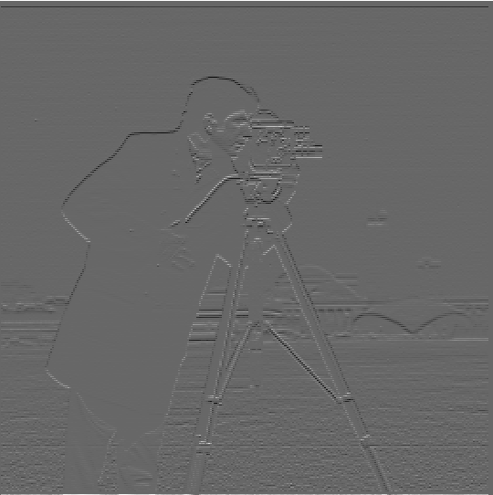

gx.png: image convolution with dx

gy.png: image convolution with dy
The goal of this project is to modify the filters and frequencies of image to produce blended/hybrid/sharper images.
To extract the edge image, I first convolved the image with dx and dy. Here is the convolved image with dx and dy. This is done by the convolve2d function from scipy.signal.
gx.png: image convolution with dx
gy.png: image convolution with dy
Then I computed the gradient magnitude by np.sqrt(np.sqaure(gx)+np.square(gy)). Finally, I would turn it into an edge image by filtering pixel values that are less than the threshold.
mag.png: Gradient Magnitude
edge.png: Edge Image with threshold=0.1
By utilizing the Gaussian filter, a.k.a. low-pass filter, it would suppress the noise and provide a much smoother edge. From gx and gy in the previous part, we would convolve each with G, a 2D gaussian Kernel. Then, we would compute the magnitude and edge image as we did previously.
gauss_edge.png
As you can see, compared to the previous edge.png, the bottom portion of the image has much less noise, and the edges around the person and the camera is much more vivid and clear. It is visually verifiable that the noise has certainly diminished.
On the next section, we convolved the 2D gaussian Kernel with dx and dy first, then convolved that with the original image to produce the edge image. Simply put, we are doing all the procedures that we've done, but in a different order. By doing this, we just have to run the convolution a single time by the partial derivative of the kernel, thus having a single convolution procedure.
gauss_edge_single.png
As you can see, there is almost no difference from the previous section, thus, verifying that we get the same result.
In this part, we will be sharpening the image by obtaining the blurred image using the gaussian filter, then use the sharpen the image by using the Unsharp Mask Filter formula from lecture.
sharp_image = image + alpha * (image - convolve2d(image, G)) # alpha = 1

Original
Blurred
Sharpened
Original
Blurred
Sharpened
Original
Blurred
Sharpened
We can visually observe that the sharpening did indeed occur. Here are some images with different alpha values for elon.jpg.
alpha=1
alpha=2
alpha=3
In this part, we will create hybrid images by combining the low frequency portion of one image and high frequency portion of the other image. This will eventually lead to a hybrid image with different interpretations at different distance. Firstly, here are the frequency representations of two sample pictures.

DerekPicture.jpg
Frequency representation of DerekPicture.jpg

nutmeg.jpg
Frequency representation of nutmeg.jpg
Then, we will perform a lowpass filter on DerekPicture.jpg and highpass filter on nutmeg.jpg. The lowpass filter is what we did like in the previous section to produce a blurred image, which is a convolution with a 2D Gaussian kernel. The highpass filter would be the subtraction of the image by the blurred image. Finally, we would combine those two to create a hybrid image.

Low Pass Filter
High Pass Filter
Hybrid Image Result
As you can see, based on the distance, you might perceieve different images of this hybrid result. Here are some additional hybrid images that I've attempted.
wolf.jpg
dog.jpg
Hybrid of wolf and dog
rick.jpg
morty.jpg
Hybrid of Rick and Morty
Even if the eyes were aligned, the overall facial anatomy of dogs and wolves are vastly different. If two images were either completely similar or completely different structures, hybrids might be possible. But in this case, the images are sort of same but the details are different. In such case, the hybrid does not look as well as the other examples. However, with closer or farther distances, we can clearly distinguish the two images.
In this part, we will implement Gaussian and Laplacian stacks to prepare for Multi-resolution blending. Here are the 12 images I've recreated by doing laplacian stacks of each image and the blended image at level 0, 2, and 4.
It's Sblended!
multiresolution blending
However, this sample image was quite easily aligned to perform blending. I can even raw-perform the alpha blending and get a even better result.
alpha blending
If the world is indeed perfect and everything is aligned, alpha blending might be the best option. However in real life, gaussian and laplacian stacks are quite flexible to perform image blending. Here are some of my examples:

river.jpg
lava.jpg
Blend result: OMG eruption under a bright blue sky???

mario.jpg

luigi.jpg
Blend result: Mari...are you Luigi?